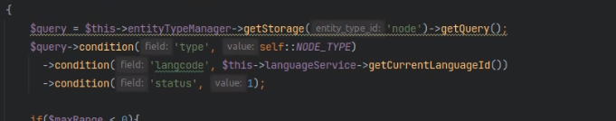
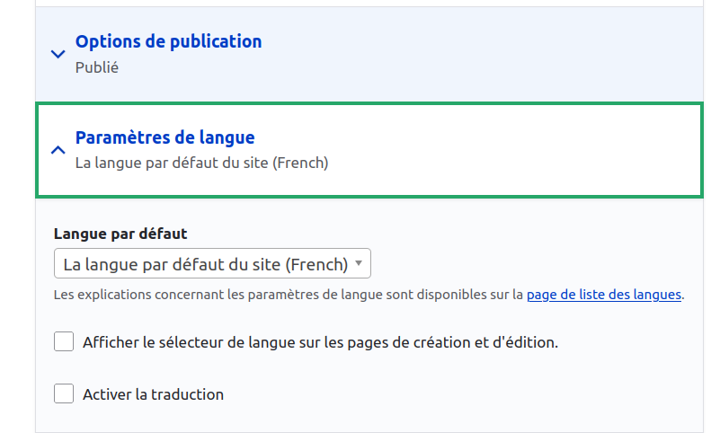

Changement de langue
Dans le Back Office
Configuration/Regionalisation et langue/langues
Puis activer les langue pour :
Langue selectionner = choix de la langue dans le lnavigateur pour le user
URL = la langue est définie à partir de l'url .fr, .de....
Block disponible
Selecteur de langue que l'on peut positioner ou l'on souhaite (sous forme de select
Dans le Back Office
Pour chaque article on peut ouvrir la traduction : traduire ce champ
Si il est mentionné (all languages) ca signifie que la traduction n'est pas effectuée. La langue est générique et non traduite
Gérer ses contenus traduits
en bo -->/admin/config/regional/content-language
Dans cette partie on peut gérer la traduction des éléments de manière globale
Les images ne snt pas a traduire en regle general, comme les ecrit le, ecrit par...
Reglage des paragraphes
Les champs de paragraphes sont ouverts à la traduction
Dans page de configuration, dans le champ de node qui reference paragraph on ne l'ouvre pas à la traduction (not supported)
On fait ca pour que l'ouverture à la traduction soit bien effective
Dans le code
Drupal met à disposition un manager pour les langues
Ce sont des variables disponible
Dans la gateway
on charge dans le construct languageService
Dans la condition on definit le langcode
Activer la traduction
Dans les types de contenus on peut activer le parametre de langue
Sur le formulaire e contenu il y aura un select pour choisir la langue dans laquele on veut enregistrer le contenu
Dans la vue de contenue on peut aussi choisir la langue que l'on veut selectionner pour l'article ou les articles